Ribosome diversity and RPF2
Studying rRNA diversity and the functional relevance of rRNA processing factor 2 in ribosome biogenesis, root and shoot development, and drought stress tolerance in rice.
Search by a person, research topic, project, or publication.
In Ramu's lab, we explore plant stress-adaptation mechanisms to develop climate-resilient plants with high nutritional value.
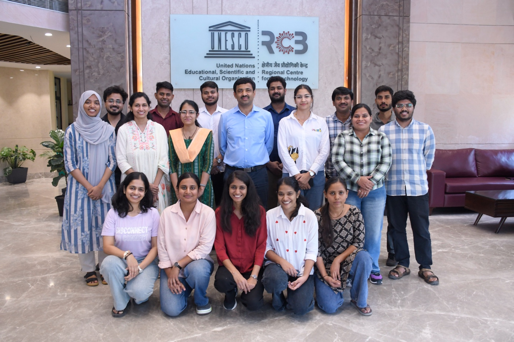
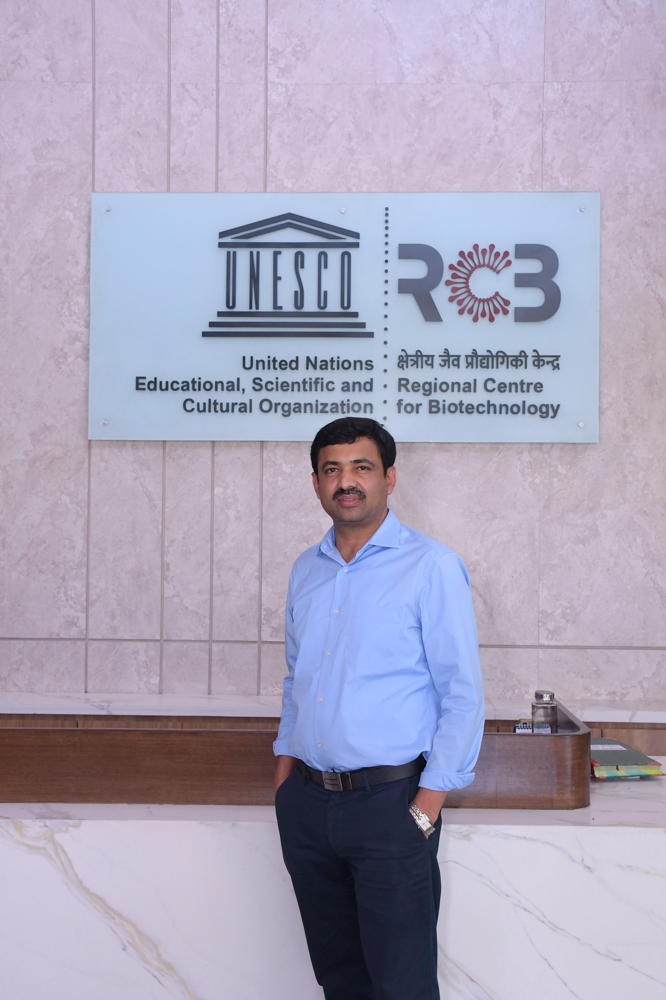
Dr. Ramu S. Vemanna is an Associate Professor at the Regional Centre for Biotechnology. His lab studies plant molecular biology, ribosome biogenesis, translational regulation, and plant health.
We investigate ribosome biogenesis, ribosomal proteins, translational mechanisms, and their extra-ribosomal functions in plant development and stress adaptation.
We study acquired tolerant traits and the cellular mechanisms that help crops maintain productivity under changing environmental conditions.
Functional and chemical genomics approaches are used to improve resistance against bacterial leaf blight caused by Xanthomonas oryzae pv. oryzae.
Studying rRNA diversity and the functional relevance of rRNA processing factor 2 in ribosome biogenesis, root and shoot development, and drought stress tolerance in rice.
Genetic dissection of rancidity and goitrogenic C-glycosyl flavone biosynthesis genes to enhance the shelf-life and nutritional quality of pearl millet flour.
An integrated cell wall biochemistry-based strategy for promoting the resilience and circularity of rice cultivation through an Indo-Sweden bilateral program.
Developing CRISPR/Cas9 technologies to improve crop protection against bacterial leaf blight in rice.
Understanding how drought stress influences ribosomes and protein synthesis, including the functional relevance of Ribosomal Protein L10 in rice.
Identifying and functionally characterizing genes involved in protein translation and degradation, and developing inhibitors to understand bacterial pathogenicity in rice.
Disrupting DNA mismatch repair genes with CRISPR/Cas9 to create genetic variability and characterize their relevance in crop improvement.
Developing an agrochemical that inhibits ABA biosynthesis proteins or anion channels that regulate stomatal opening despite ABA accumulation.
Shankar Mavinamar, Sneh Lata Singla Pareek, Avinash Bajaj, Ramu S. Vemanna. Indian Patent Application No. 202511006944, dated 28 January 2025.
Pal G, Bajaj A, Bhattacharjee S, Vemanna RS. Indian patent application 202311015285; Patent No. 560014, granted 12 February 2025. The nanopolymer-RNP complex targets bacterial disease genes in rice, potato, and Arabidopsis.
A. Rode, K. Shinde, D. Ojha, R. Vemanna. Patent No. 539344, granted 27 May 2024.
Babitha KC, Veena HM, Ramu S. Vemanna. Patent No. 550300, granted 13 September 2024. The formulation keeps stomata open and enhances transpiration and yield in rice, wheat, cowpea, and greengram.
Ramu S. Vemanna, PA, Vanitha, NV, Preethi. Indian Patent Application No. 202111038068, filed 23 August 2021. The agrochemical combination reduces ABA accumulation, enhances transpiration, and increases plant yield under drought.
Garima Pal and Ramu S. Vemanna. Application No. 202411062781, provisional patent filed for crop protection against bacteria, nematodes, and viruses.
Patent file No. 2646/CHE/2014. Ramu S. Vemanna, Babitha K. C., Sheela H. S., Prasad T. G., Tuteja N., and Udayakumar M.
Patent file No. 4195/CHE/2014. Ramu S. Vemanna, Amaranatha Reddy V., and Udayakumar M.
Adkar-Purushothama CR, Vemanna RS, Mysore KS. Frontiers in Plant Science. 2026;17:1920616.
Yadav S, Mathew K, Singh S, Biswas A, Deshpande S, Kumari C, Reddy SK, Wang K, Maiti TK, Mysore KS, Vemanna RS. bioRxiv. 2026 Mar 13:2026-03.
Yadav S, Preethi V, Dadi S, Seth CS, G K, Chandrashekar BK, Vemanna RS. Physiology and Molecular Biology of Plants. 2024;30(10):1593-1610. doi:10.1007/s12298-024-01514-w.
Dawane A, Deshpande S, Vijayaraghavreddy P, Vemanna RS. Plant Physiology and Biochemistry. 2024;208:108513. doi:10.1016/j.plaphy.2024.108513.
Pal G, Ingole KD, Yavvari PS, Verma P, Kumari A, Chauhan C, Chaudhary D, Srivastava A, Bajaj A, Vemanna RS. Molecular Plant Pathology. 2024;25:e13417.
Lekshmy VS, Preethi V, Karthik N, Arpitha GD, Chaitanya PM, Sathishraj R, Dhananjay Shindhe, Vemanna RS, and colleagues. Physiologia Plantarum. 2023;175(5):e13992.
Pal G, Bakade R, Deshpande S, and colleagues, including Vemanna RS. BMC Plant Biology. 2022;22:349.
Karthika V, Babitha KC, Chandrashekar K, Kiranmai K, Shankar AG, Udayakumar M, and Vemanna RS. Journal of Agricultural and Food Chemistry. 2021.
Preethi V, Vemanna RS, Xinyou Y, Paul CS, Udayakumar M, Sheshshayee S. Plant Phenomics. 2020:5905371.
S.V. Ramu, Swetha TN, H.S. Sheela, K.C. Babitha, P. Chandrashekar Reddy, T.G. Prasad, M. Udayakumar. Plant Biotechnology Journal. 2015. doi:10.1111/pbi.12461.
Leads research on how ribosome biogenesis, translational regulation, and drought adaptation shape plant growth and crop protection.
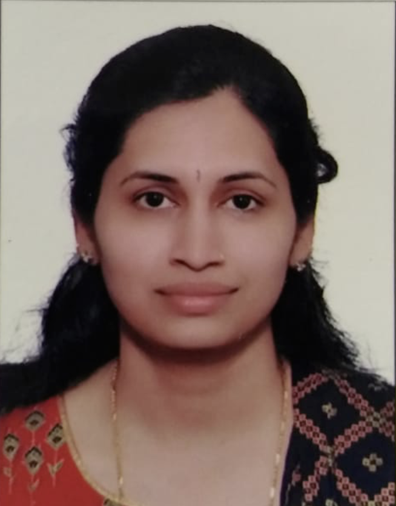
Dr. Babitha works to develop next-generation agrochemicals that improve plant physiological processes by designing small molecules that target relevant proteins to enhance carbon capture, photosynthesis, and crop productivity. The objective is to translate lab discoveries to field applications.
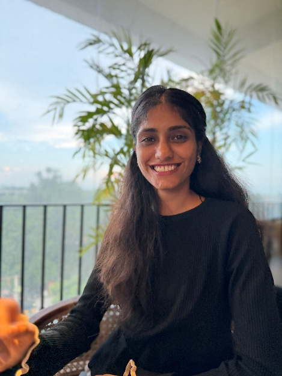
Shobhna is trying to unravel rRNA processing, a step in ribosome biogenesis required for plant growth and development. Other than that, you will find her untangling any other interesting problem.
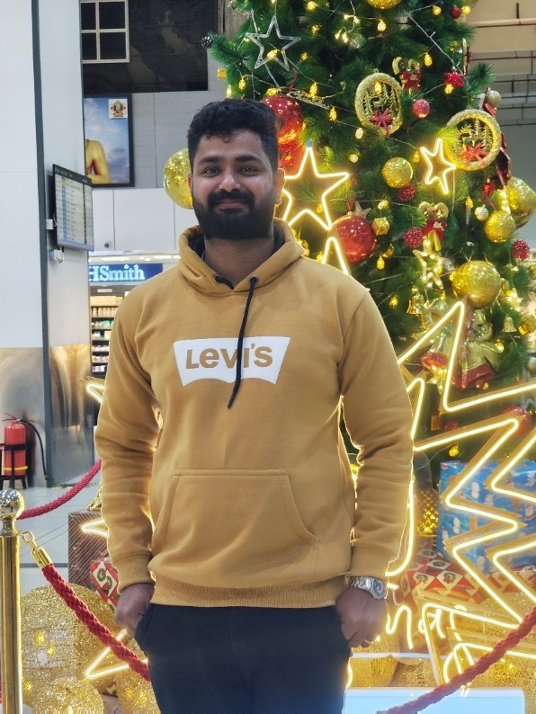
Libin is studying the changes in ribosome composition and functional insight in rice under drought conditions, and is also interested in deciphering the functional significance of the RPL10-interacting ABC protein.
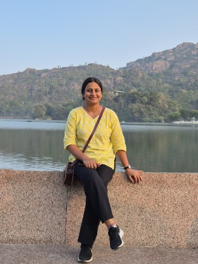
Manisha is trying to understand the molecular mechanisms of ribosome heterogeneity and the translational regulation underlying plant adaptation to abiotic stresses, with a particular emphasis on drought tolerance in rice. She is particularly interested in understanding how these regulatory mechanisms coordinate plant growth, development, and adaptation under changing environmental conditions.
Sathya works on dry-seeded rice, engineering organellar translation-associated factors to improve seed germination, seedling vigor, and drought tolerance. In his leisure time, he enjoys cooking.
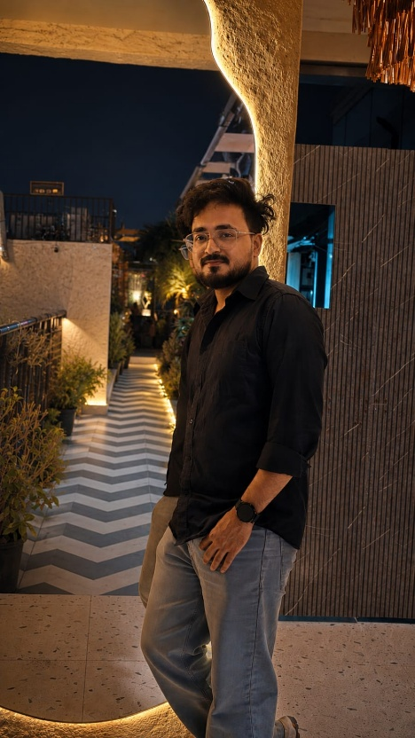
Shubham's research focuses on elucidating the molecular mechanisms underlying rice responses to biotic and abiotic stresses using functional genomics, genome editing, and multi-omics approaches to enhance crop resilience. Apart from research work, Shubham likes singing.
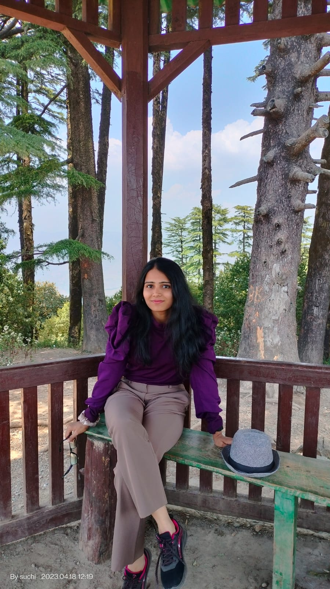
Suchi is on a quest to unravel the "how" and "why" of rRNA in rice development, growth, and survival, with a focus on plant adaptation and resilience. Beyond the lab, she continues to explore the "how" and "why" of the universe, searching for answers to endless questions that spark her curiosity.
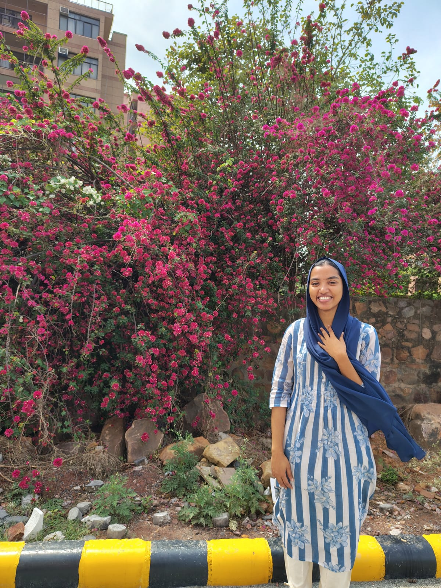
Dana is currently investigating the molecular mechanism underlying seed dormancy in rice under drought stress, focusing on the roles of ABA signaling and translational regulation. Apart from her research work, she enjoys watching movies and baking.
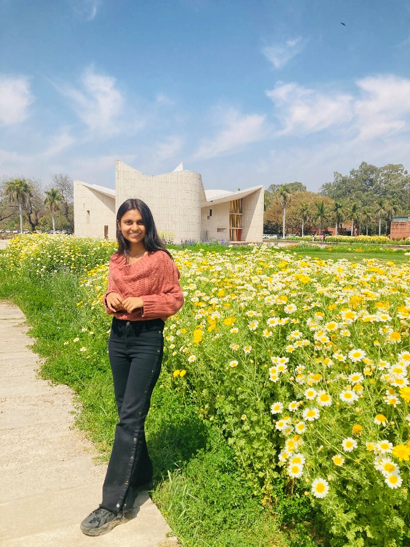
Avani is currently working to elucidate the interactions and functional roles of polyubiquitin proteins in rice, with a focus on their potential involvement in stress regulation and cellular processes. Beyond research, Avani loves to explore nature.
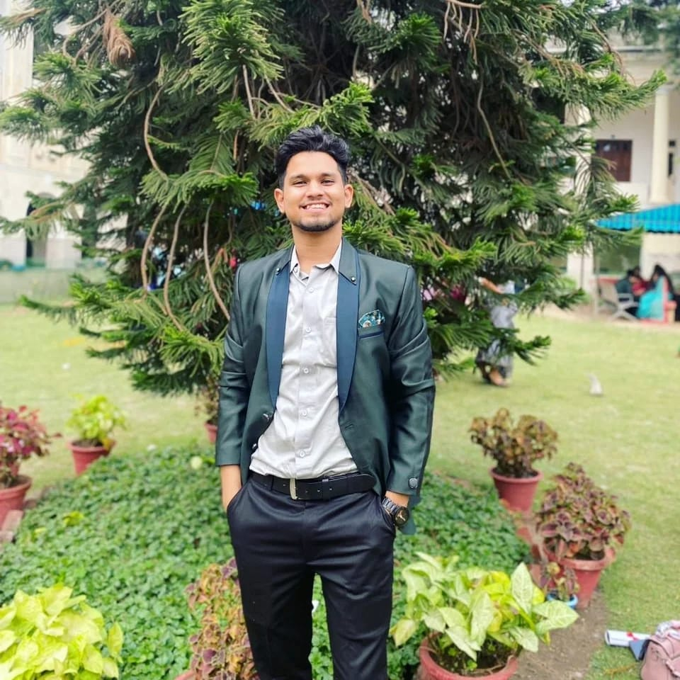
Bariz works on solving viral infections in potatoes, with a particular interest in understanding virus-plant interactions. He seeks to understand the molecular aspects of viral infection and potato plants' responses to viral stress. Outside the laboratory, he enjoys playing cricket and badminton.
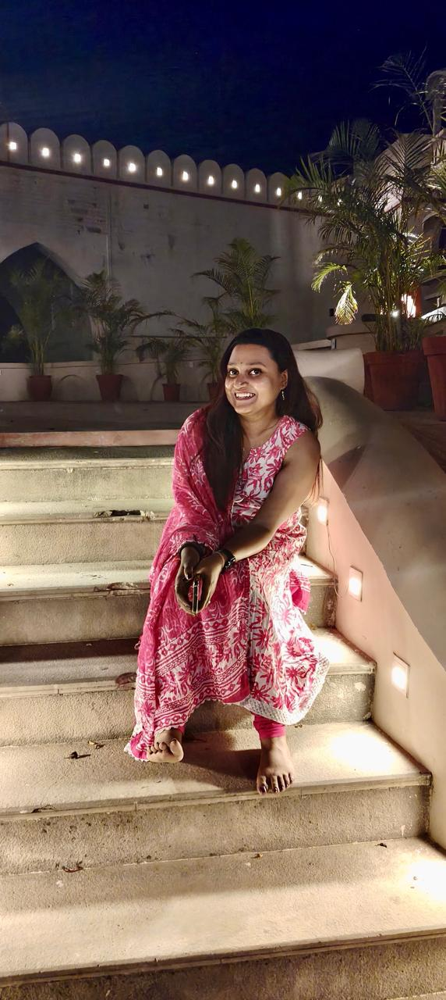
Swetannita did her PhD on miR160 and its targets, and the ARF role in root system development under nitrogen deficiency in Brassica juncea. She is now working on ribosomal RNA (rRNA) diversity and the functional relevance of rRNA processing. Beyond the bench, she is a trained Odissi classical dancer. She loves painting and creating mandala artwork, with a keen interest in abstract art.
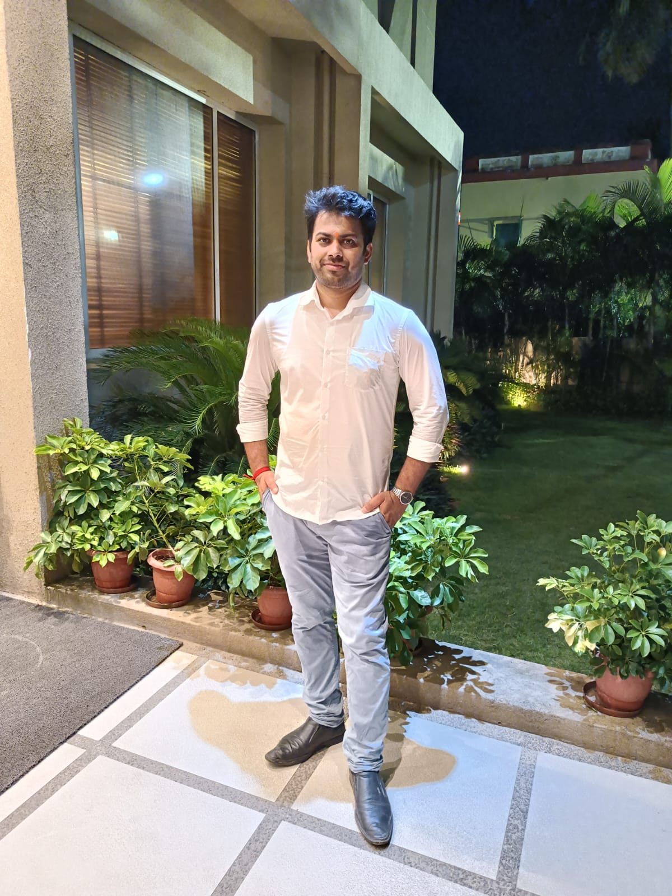
Umang is working on the genetic dissection of rancidity and goitrogenic C-glycosyl flavone biosynthesis genes to enhance the shelf-life and nutritional quality of pearl millet flour. He loves singing, acting, and playing chess.
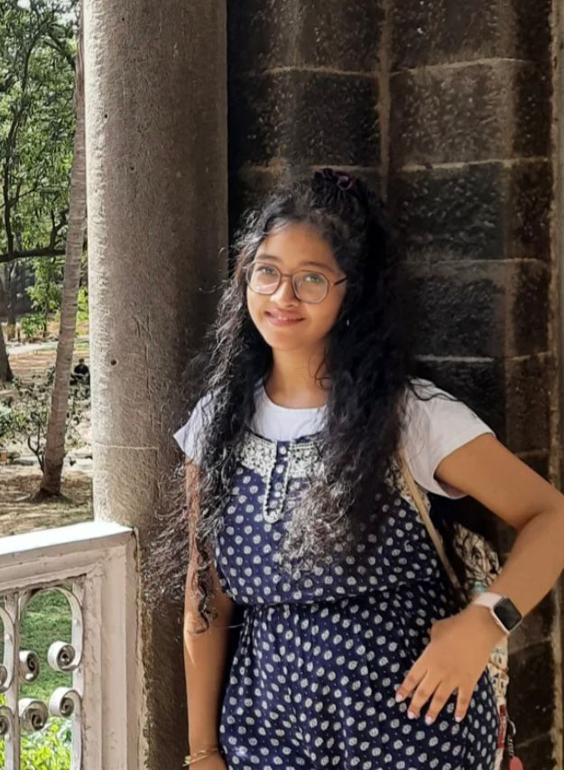
Orishma is currently working on an integrated cell-wall biochemistry-based strategy for promoting the resilience and circularity of rice cultivation. She is trying to understand the molecular and regulatory mechanisms that contribute to plant resilience, particularly in rice. Outside the lab, she enjoys practising Odissi classical dance and Hindustani classical music.
Interested in Postdoctoral fellowships, DBT-RA, NPDF, DBT-BioCARE, WOSA, etc. scheme, please write me with a one-page statement of Interest that aligns with my lab focus and send me two contact details of References.
Associate Professor